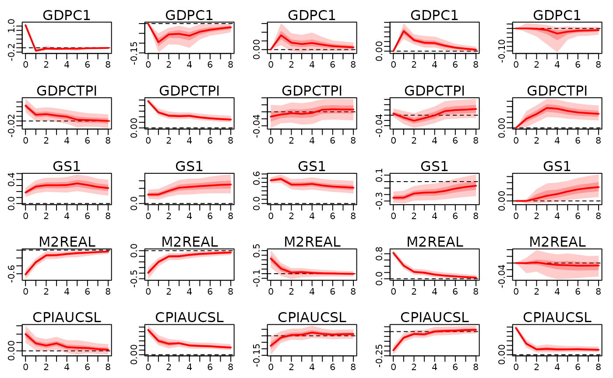

Set identifying restrictions for the structural VAR parameters.
Source:R/irf.R
specify_structural_restrictions.RdSet identifying restrictions for the structural VAR parameters.
Usage
specify_structural_restrictions(
x,
restrictions_facload = NULL,
restrictions_B0_inv_t = NULL,
restrictions_B0 = NULL,
restrictions_structural_coeff = NULL,
restrictions_long_run_ir = NULL
)Arguments
- x
An object of type
bayesianVARs_bvar.- restrictions_facload
an M times r matrix of restrictions on the factor loadings. This is equivalent to the instantaneous effects of the factor shocks. Can only be used, if the factor decomposition for sigma was specified.
- restrictions_B0_inv_t
an M times M matrix of restrictions on the instantaneous effects of the structural shocks. Columns correspond to shocks, rows to variables. Can only be used, if the cholesky decomposition for sigma was specified.
- restrictions_B0
an M times M matrix of restrictions on the structural matrix. Can only be used, if the cholesky decomposition for sigma was specified.
- restrictions_structural_coeff
a matrix of restrictions on the structural VAR coefficients. Its size should match the dimensions of
x$PHI. Can only be used, if the cholesky decomposition for sigma was specified.- restrictions_long_run_ir
a matrix of restrictions on the long run impulse responses. The long run impulse responses are the sum of the impulse responses summed over all time horizons. Restrictions on the long run impulse responses can be specified for both the factor and the cholesky decomposition of sigma. In the case of a factor decomposition its size is expected to be M times r. In the case of a cholesky decomposition the size must be M times M.
Details
All restrictions_* entries have following meaning
- NA:
an unrestricted entry.
- 0:
The entry at this position is restricted to be zero (i.e. an exclusion restriction).
- A positive number:
The sign of this entry should be positive.
- A negative number:
The sign of this entry should be negative.
The structural VAR(p) model is of the following form: $$\boldsymbol{y}^\prime_t \boldsymbol{B}_0 = \boldsymbol{x}^\prime_t\boldsymbol{\Phi} \boldsymbol{B}_0 + \boldsymbol{\omega}^\prime_t$$
Author
Stefan Haan sthaan@edu.aau.at
Examples
train_data <- 100 * usmacro_growth[,c("GDPC1", "GDPCTPI", "GS1", "M2REAL", "CPIAUCSL")]
prior_sigma <- specify_prior_sigma(train_data, type="cholesky", cholesky_heteroscedastic=FALSE)
#>
#> Since argument 'type' is specified with 'cholesky', all arguments starting with 'factor_' are being ignored.
#>
#> Argument 'cholesky_priorhomoscedastic' not specified. Setting both shape and rate of inverse gamma prior equal to 0.01.
mod <- bvar(train_data, lags=5L, prior_sigma=prior_sigma, quiet=TRUE)
structural_restrictions <- specify_structural_restrictions(
mod,
restrictions_B0=rbind(
c(1 ,NA,0 ,NA,NA),
c(0 ,1 ,0 ,NA,NA),
c(0 ,NA,1 ,NA,NA),
c(0 ,0 ,NA,1 ,NA),
c(0 ,0 ,0 ,0 ,1 )
)
)
irf_structural <- irf(
mod, ahead=8,
structural_restrictions=structural_restrictions
)
plot(irf_structural)
